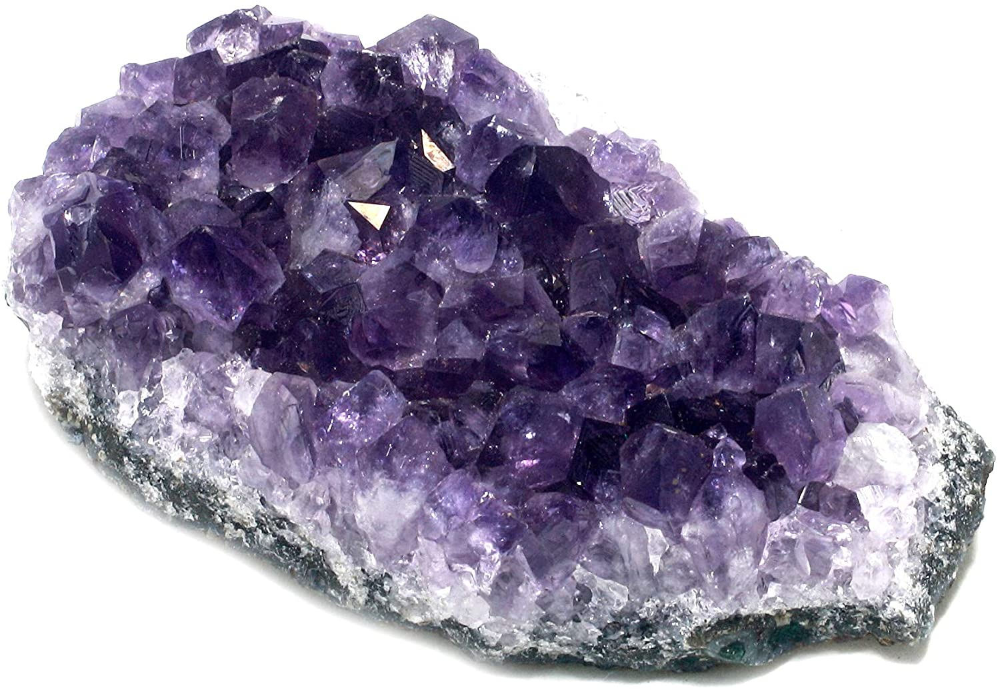

Amethyst
Information
Amethyst is the most popular variety of quartz crystal that is considered the mos powerful and protective stone. The world's most important amethyst deposits are usually found in the fractures and cavities of igneous rocks in Brazil and Uruguay. You can immediatly find peace by simply looking at this brilliant crystal. methyst has the ability to convert lower vibrations to higher frequencies, which then transforms negative energy to love energy. It works with the Third Eye Chakra, which is located between the eyebrows. This provides peaceful energy, which is perfect for meditation and for developing psychic abilities.
Health Benefits
Link-TextOutfitInspos
Some outfits inspos who match perfectly with the black green stone